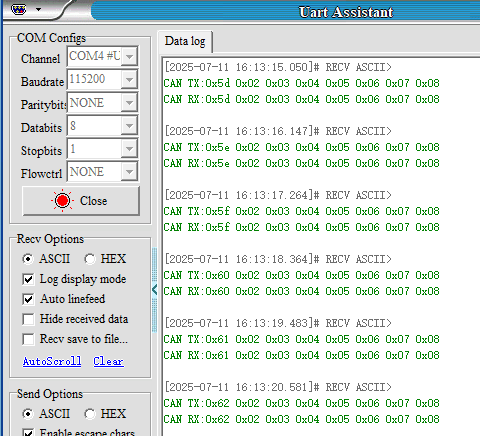
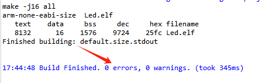

Управление мотором
-
- Цель эксперимента
-
- Подключение оборудования
-
- Анализ основного кода
-
- Компиляция, загрузка и прошивка firmware
-
- Результаты эксперимента
1. Цель эксперимента
Изучение управления моторами с использованием ШИМ-выхода плата управления STM32.
Примечание: поскольку мотор начинает двигаться сразу после загрузки программы, сначала подвесьте робота или мотор в воздухе, чтобы он не начал ездить самопроизвольно.
2. Подключение оборудования
Как показано на рисунке ниже, плата управления STM32 имеет четыре встроенных интерфейса управления моторами с энкодером. Для этого требуется дополнительно подключить моторы с энкодером. Интерфейс управления моторами поддерживает моторы с энкодером типа 520. Поскольку энкодер требует высокого напряжения и тока, необходимо подключить батарею для питания.
Соответствие названий четырёх интерфейсов моторов: переднее левое колесо → M1, заднее левое колесо → M2, переднее правое колесо → M3, заднее правое колесо → M4.
Рядом с интерфейсом мотора нанесена подробная маркировка порядка проводов. В качестве примера рассмотрим мотор M1. M1+ и M1- — интерфейсы управления вращением мотора, GND и +3,3В — цепи питания энкодера, H1A и H1B — выводы обнаружения импульсов энкодера.

Соответствие между выводами GPIO драйвера ШИМ мотора показано в таблице ниже:


| Сигнал ШИМ интерфейса мотора | Номер GPIO STM32 | Канал таймера STM32 |
|---|---|---|
| M1+(M1A) | PE13 | TIM1_CH3 |
| M1-(M1B) | PE14 | TIM1_CH4 |
| M2+(M2A) | PE9 | TIM1_CH1 |
| M2-(M2B) | PE11 | TIM1_CH2 |
| M3+(M3A) | PA5 | TIM8_CH1N |
| M3-(M3B) | PB0 | TIM8_CH2N |
| M4+(M4A) | PC8 | TIM8_CH3 |
| M4-(M4B) | PC9 | TIM8_CH4 |
Схема подключения интерфейсов моторов:
3. Анализ основного кода
Путь к исходному коду программы:
Board_Samples/STM32_Samples/Motor
Сначала инициализируйте параметры настройки таймера TIM1: установите коэффициент деления частоты на 4, диапазон счёта — от 0 до 1999. Поскольку тактовая частота таймера TIM1 составляет 240 МГц, частота ШИМ рассчитывается как 240000000/(4+1)/(1999+1) = 24 кГц.

void MX_TIM1_Init(void)
{
TIM_MasterConfigTypeDef sMasterConfig = {0};
TIM_OC_InitTypeDef sConfigOC = {0};
TIM_BreakDeadTimeConfigTypeDef sBreakDeadTimeConfig = {0};
/* USER CODE BEGIN TIM1_Init 1 */
/* USER CODE END TIM1_Init 1 */
htim1.Instance = TIM1;
htim1.Init.Prescaler = 4;
htim1.Init.CounterMode = TIM_COUNTERMODE_UP;
htim1.Init.Period = 1999;
htim1.Init.ClockDivision = TIM_CLOCKDIVISION_DIV1;
htim1.Init.RepetitionCounter = 0;
htim1.Init.AutoReloadPreload = TIM_AUTORELOAD_PRELOAD_ENABLE;
if (HAL_TIM_PWM_Init(&htim1) != HAL_OK)
{
Error_Handler();
}
sMasterConfig.MasterOutputTrigger = TIM_TRGO_RESET;

sMasterConfig.MasterOutputTrigger2 = TIM_TRGO2_RESET;
sMasterConfig.MasterSlaveMode = TIM_MASTERSLAVEMODE_DISABLE;
if (HAL_TIMEx_MasterConfigSynchronization(&htim1, &sMasterConfig) != HAL_OK)
{
Error_Handler();
}
sConfigOC.OCMode = TIM_OCMODE_PWM1;
sConfigOC.Pulse = 0;
sConfigOC.OCPolarity = TIM_OCPOLARITY_HIGH;
sConfigOC.OCNPolarity = TIM_OCNPOLARITY_HIGH;
sConfigOC.OCFastMode = TIM_OCFAST_DISABLE;
sConfigOC.OCIdleState = TIM_OCIDLESTATE_RESET;
sConfigOC.OCNIdleState = TIM_OCNIDLESTATE_RESET;
if (HAL_TIM_PWM_ConfigChannel(&htim1, &sConfigOC, TIM_CHANNEL_1) != HAL_OK)
{
Error_Handler();
}
if (HAL_TIM_PWM_ConfigChannel(&htim1, &sConfigOC, TIM_CHANNEL_2) != HAL_OK)
{
Error_Handler();
}
if (HAL_TIM_PWM_ConfigChannel(&htim1, &sConfigOC, TIM_CHANNEL_3) != HAL_OK)
{
Error_Handler();
}
if (HAL_TIM_PWM_ConfigChannel(&htim1, &sConfigOC, TIM_CHANNEL_4) != HAL_OK)
{
Error_Handler();
}
sBreakDeadTimeConfig.OffStateRunMode = TIM_OSSR_DISABLE;
sBreakDeadTimeConfig.OffStateIDLEMode = TIM_OSSI_DISABLE;
sBreakDeadTimeConfig.LockLevel = TIM_LOCKLEVEL_OFF;
sBreakDeadTimeConfig.DeadTime = 0;
sBreakDeadTimeConfig.BreakState = TIM_BREAK_DISABLE;
sBreakDeadTimeConfig.BreakPolarity = TIM_BREAKPOLARITY_HIGH;
sBreakDeadTimeConfig.BreakFilter = 0;
sBreakDeadTimeConfig.Break2State = TIM_BREAK2_DISABLE;
sBreakDeadTimeConfig.Break2Polarity = TIM_BREAK2POLARITY_HIGH;
sBreakDeadTimeConfig.Break2Filter = 0;
sBreakDeadTimeConfig.AutomaticOutput = TIM_AUTOMATICOUTPUT_DISABLE;
if (HAL_TIMEx_ConfigBreakDeadTime(&htim1, &sBreakDeadTimeConfig) != HAL_OK)
{
Error_Handler();
}
HAL_TIM_MspPostInit(&htim1);
}
Параметры инициализации таймера TIM8 совпадают с параметрами таймера TIM1.
void MX_TIM8_Init(void)
{
TIM_MasterConfigTypeDef sMasterConfig = {0};
TIM_OC_InitTypeDef sConfigOC = {0};
TIM_BreakDeadTimeConfigTypeDef sBreakDeadTimeConfig = {0};
/* USER CODE BEGIN TIM8_Init 1 */
/* USER CODE END TIM8_Init 1 */
htim8.Instance = TIM8;
htim8.Init.Prescaler = 4;
htim8.Init.CounterMode = TIM_COUNTERMODE_UP;
htim8.Init.Period = 1999;
htim8.Init.ClockDivision = TIM_CLOCKDIVISION_DIV1;
htim8.Init.RepetitionCounter = 0;
htim8.Init.AutoReloadPreload = TIM_AUTORELOAD_PRELOAD_ENABLE;
if (HAL_TIM_PWM_Init(&htim8) != HAL_OK)
{
Error_Handler();
}
sMasterConfig.MasterOutputTrigger = TIM_TRGO_RESET;
sMasterConfig.MasterOutputTrigger2 = TIM_TRGO2_RESET;

sMasterConfig.MasterSlaveMode = TIM_MASTERSLAVEMODE_DISABLE;
if (HAL_TIMEx_MasterConfigSynchronization(&htim8, &sMasterConfig) != HAL_OK)
{
Error_Handler();
}
sConfigOC.OCMode = TIM_OCMODE_PWM1;
sConfigOC.Pulse = 0;
sConfigOC.OCPolarity = TIM_OCPOLARITY_HIGH;
sConfigOC.OCNPolarity = TIM_OCNPOLARITY_HIGH;
sConfigOC.OCFastMode = TIM_OCFAST_DISABLE;
sConfigOC.OCIdleState = TIM_OCIDLESTATE_RESET;
sConfigOC.OCNIdleState = TIM_OCNIDLESTATE_RESET;
if (HAL_TIM_PWM_ConfigChannel(&htim8, &sConfigOC, TIM_CHANNEL_1) != HAL_OK)
{
Error_Handler();
}
if (HAL_TIM_PWM_ConfigChannel(&htim8, &sConfigOC, TIM_CHANNEL_2) != HAL_OK)
{
Error_Handler();
}
if (HAL_TIM_PWM_ConfigChannel(&htim8, &sConfigOC, TIM_CHANNEL_3) != HAL_OK)
{
Error_Handler();
}
if (HAL_TIM_PWM_ConfigChannel(&htim8, &sConfigOC, TIM_CHANNEL_4) != HAL_OK)
{
Error_Handler();
}
sBreakDeadTimeConfig.OffStateRunMode = TIM_OSSR_DISABLE;
sBreakDeadTimeConfig.OffStateIDLEMode = TIM_OSSI_DISABLE;
sBreakDeadTimeConfig.LockLevel = TIM_LOCKLEVEL_OFF;
sBreakDeadTimeConfig.DeadTime = 0;
sBreakDeadTimeConfig.BreakState = TIM_BREAK_DISABLE;
sBreakDeadTimeConfig.BreakPolarity = TIM_BREAKPOLARITY_HIGH;
sBreakDeadTimeConfig.BreakFilter = 0;
sBreakDeadTimeConfig.Break2State = TIM_BREAK2_DISABLE;
sBreakDeadTimeConfig.Break2Polarity = TIM_BREAK2POLARITY_HIGH;
sBreakDeadTimeConfig.Break2Filter = 0;
sBreakDeadTimeConfig.AutomaticOutput = TIM_AUTOMATICOUTPUT_DISABLE;
if (HAL_TIMEx_ConfigBreakDeadTime(&htim8, &sBreakDeadTimeConfig) != HAL_OK)
{
Error_Handler();
}
/* USER CODE BEGIN TIM8_Init 2 */
/* USER CODE END TIM8_Init 2 */
HAL_TIM_MspPostInit(&htim8);
}
Инициализация мотора запускает вывод ШИМ.
void Motor_Init(void)
{
HAL_TIM_PWM_Start(&htim1, TIM_CHANNEL_1);
HAL_TIM_PWM_Start(&htim1, TIM_CHANNEL_2);
HAL_TIM_PWM_Start(&htim1, TIM_CHANNEL_3);
HAL_TIM_PWM_Start(&htim1, TIM_CHANNEL_4);
HAL_TIMEx_PWMN_Start(&htim8, TIM_CHANNEL_1);
HAL_TIMEx_PWMN_Start(&htim8, TIM_CHANNEL_2);
HAL_TIM_PWM_Start(&htim8, TIM_CHANNEL_3);
HAL_TIM_PWM_Start(&htim8, TIM_CHANNEL_4);
}
Соответствие между каналами ШИМ мотора и таймером связывается через макроопределения.
#define PWM_M1_A TIM1->CCR3
#define PWM_M1_B TIM1->CCR4
#define PWM_M2_A TIM1->CCR1
#define PWM_M2_B TIM1->CCR2
#define PWM_M3_A TIM8->CCR1
#define PWM_M3_B TIM8->CCR2
#define PWM_M4_A TIM8->CCR3
#define PWM_M4_B TIM8->CCR4
Поскольку при слишком низком напряжении запуска мотор не может вращаться, необходимо добавить фильтрацию мёртвой зоны (dead zone), чтобы управление мотором было более отзывчивым.
#define MOTOR_IGNORE_PULSE (999)
static int16_t Motor_Ignore_Dead_Zone(int16_t pulse)
{
if (pulse > 0) return pulse + MOTOR_IGNORE_PULSE;
if (pulse < 0) return pulse - MOTOR_IGNORE_PULSE;
return 0;
}
Необходимо ограничить входное значение ШИМ.
#define MOTOR_MAX_PULSE (1999)
static int16_t Motor_Limit_Pulse(int16_t pulse)
{
if (pulse >= MOTOR_MAX_PULSE) return MOTOR_MAX_PULSE;
if (pulse <= -MOTOR_MAX_PULSE) return -MOTOR_MAX_PULSE;
return pulse;
}
Установка скорости мотора: передаётся значение ID мотора для его идентификации, speed используется для управления скоростью мотора, диапазон значений — ±MOTOR_MAX_SPEED.
#define MOTOR_MAX_SPEED (1000)
typedef enum {
MOTOR_ID_M1 = 0,
MOTOR_ID_M2,
MOTOR_ID_M3,
MOTOR_ID_M4,
MOTOR_ID_MAX
} Motor_ID;
void Motor_Set_Pwm(uint8_t id, int16_t speed)
{
int16_t pulse = Motor_Ignore_Dead_Zone(speed);
// Ограничить входное значение
pulse = Motor_Limit_Pulse(pulse);
switch (id)
{
case MOTOR_ID_M1:
{
pulse = -pulse;
if (pulse >= 0)
{
PWM_M1_A = pulse;
PWM_M1_B = 0;
}
else
{
PWM_M1_A = 0;
PWM_M1_B = -pulse;
}
break;
}
case MOTOR_ID_M2:
{
pulse = -pulse;
if (pulse >= 0)
{
PWM_M2_A = pulse;
PWM_M2_B = 0;
}
else
{
PWM_M2_A = 0;
PWM_M2_B = -pulse;
}
break;
}
case MOTOR_ID_M3:
{
if (pulse >= 0)
{
PWM_M3_A = pulse;
PWM_M3_B = 0;
}
else
{
PWM_M3_A = 0;
PWM_M3_B = -pulse;
}
break;
}
case MOTOR_ID_M4:
{
if (pulse >= 0)
{
PWM_M4_A = pulse;
PWM_M4_B = 0;
}
else
{
PWM_M4_A = 0;
PWM_M4_B = -pulse;
}
break;
}
case MOTOR_ID_MAX:
{
if (pulse >= 0)
{
PWM_M1_A = 0;
PWM_M1_B = Motor_ABS(pulse);
PWM_M2_A = 0;
PWM_M2_B = Motor_ABS(pulse);
PWM_M3_A = Motor_ABS(pulse);
PWM_M3_B = 0;
PWM_M4_A = Motor_ABS(pulse);
PWM_M4_B = 0;
}
else
{
PWM_M1_A = Motor_ABS(pulse);
PWM_M1_B = 0;
PWM_M2_A = Motor_ABS(pulse);
PWM_M2_B = 0;
PWM_M3_A = 0;
PWM_M3_B = Motor_ABS(pulse);
PWM_M4_A = 0;
PWM_M4_B = Motor_ABS(pulse);
}
break;
}
default:
break;
}
}
Функция остановки мотора: параметр brake определяет режим остановки; brake=MOTOR_STOP означает свободную остановку (накат), brake=MOTOR_BRAKE означает остановку с торможением.
typedef enum {
MOTOR_STOP = 0,
MOTOR_BRAKE=1,
} Motor_Stop_Mode;
void Motor_Stop(uint8_t brake)
{
if (brake != 0) brake = 1;
PWM_M1_A = brake * MOTOR_MAX_PULSE;
PWM_M1_B = brake * MOTOR_MAX_PULSE;
PWM_M2_A = brake * MOTOR_MAX_PULSE;
PWM_M2_B = brake * MOTOR_MAX_PULSE;
PWM_M3_A = brake * MOTOR_MAX_PULSE;
PWM_M3_B = brake * MOTOR_MAX_PULSE;
PWM_M4_A = brake * MOTOR_MAX_PULSE;
PWM_M4_B = brake * MOTOR_MAX_PULSE;
}
В функции App_Handle мотор циклически выполняет: движение вперёд 1 секунду, остановка 1 секунду, движение назад 1 секунду, остановка 1 секунду.
void App_Handle(void)
{
Motor_Init();
HAL_Delay(1000);
while (1)
{
Motor_Set_Pwm(MOTOR_ID_M1, MOTOR_MAX_PULSE/3);
Motor_Set_Pwm(MOTOR_ID_M2, MOTOR_MAX_PULSE/3);
Motor_Set_Pwm(MOTOR_ID_M3, MOTOR_MAX_PULSE/3);
Motor_Set_Pwm(MOTOR_ID_M4, MOTOR_MAX_PULSE/3);
HAL_Delay(1000);
Motor_Stop(MOTOR_STOP);
HAL_Delay(1000);
Motor_Set_Pwm(MOTOR_ID_M1, -MOTOR_MAX_PULSE/3);
Motor_Set_Pwm(MOTOR_ID_M2, -MOTOR_MAX_PULSE/3);
Motor_Set_Pwm(MOTOR_ID_M3, -MOTOR_MAX_PULSE/3);
Motor_Set_Pwm(MOTOR_ID_M4, -MOTOR_MAX_PULSE/3);
HAL_Delay(1000);
Motor_Stop(MOTOR_BRAKE);
HAL_Delay(1000);
}
}
4. Компиляция, загрузка и прошивка firmware
Выберите проект для компиляции в панели управления файлами STM32CubeIDE и нажмите кнопку компиляции на панели инструментов, чтобы начать сборку.

Если ошибок и предупреждений нет, компиляция завершена.
Нажмите и удерживайте кнопку BOOT0, затем нажмите кнопку RESET для сброса, отпустите кнопку BOOT0, чтобы войти в режим прошивки через последовательный порт. Затем используйте инструмент прошивки через последовательный порт, чтобы записать firmware на плату.
Если у вас есть ST-LINK или J-Link, можно также использовать STM32CubeIDE для прошивки firmware одним нажатием — это более удобно и быстро.
5. Результаты эксперимента
Примечание: поскольку мотор начинает двигаться сразу после загрузки программы, сначала подвесьте робота или мотор в воздухе, чтобы он не начал ездить самопроизвольно.
Светодиод MCU_LED мигает каждые 200 миллисекунд.
Мотор робота движется вперёд 1 секунду, останавливается на 1 секунду, движется назад 1 секунду и снова останавливается на 1 секунду.
